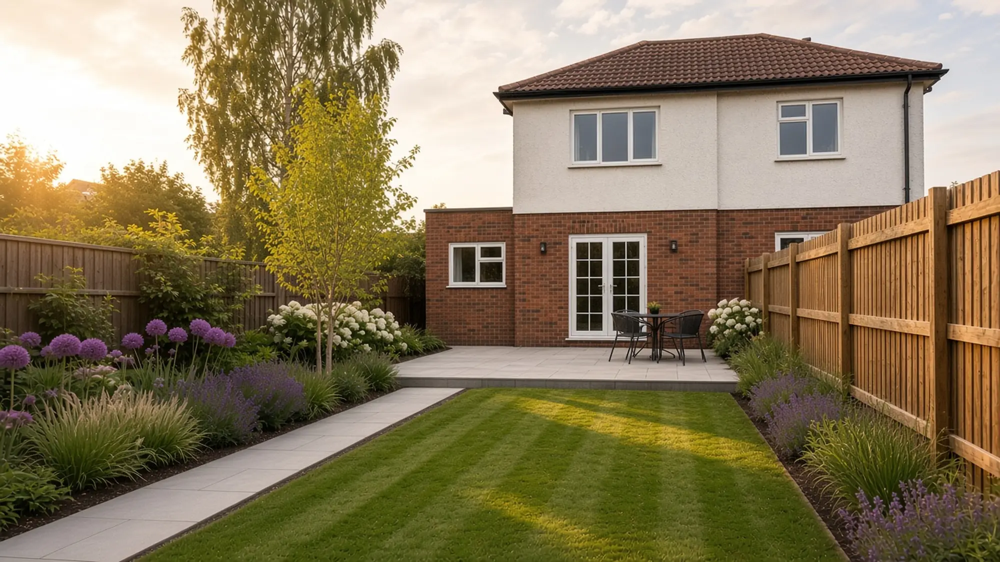
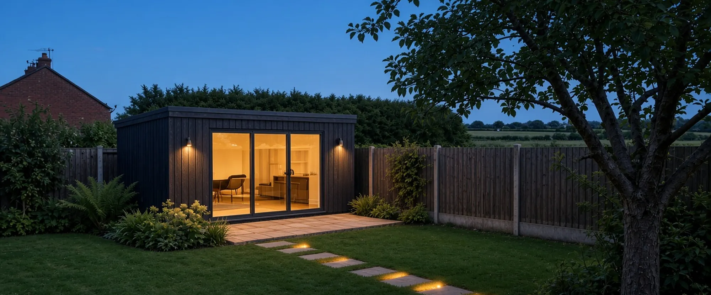

Garden design and landscaping · Ormskirk and West Lancashire
Gardens designed properly, and built from the ground up.
Patios, planting, lawns, garden rooms and the drive out front, drawn as one garden and built on bases that don't move.
Text us a photoEmail usDemo number and email. They don't reach anyone.
What customers say Sample
What people say once we've gone.
This is where the Google profile link goes. On a real client site this button opens their Google Business Profile, where people read reviews and leave one. Marlbrow is made up and has no Google profile, so here it goes nowhere.
They drew the whole garden out for us before anything was dug, then built it exactly like the drawing. The patio drains, the lawn's level, and a year on it still looks sharp.
We only rang about the drive. They got us thinking about the whole front garden instead, and they were right. It looks like it was always meant to be that way.
Our residents can get from a car to the front door without a single step now. The crew were quiet, tidy and kind to everyone while they worked.
Sample review wording written for this demo. These are not real customers, and there's no star score because there's nothing real to score.
What we do
Gardens first. Everything underneath, too.
Most jobs are a whole garden: the design, the hard landscaping, the planting and the drainage under it. The drive out front gets the same thought. And a few times a year, a care home, a school or a shop front.
 01Garden design and planting
01Garden design and planting 02Patios, paths and walls
02Patios, paths and walls 03Garden rooms and structures
03Garden rooms and structures 04Outdoor lighting
04Outdoor lighting 05Drives, as part of the garden
05Drives, as part of the garden 06Groundworks and drainage
06Groundworks and drainage 07Fencing and gates
07Fencing and gates 08Light commercial
08Light commercial
All services Project pictures are illustrative.
Featured project · Aughton Sample project
Same garden. Same spot.
The back garden of a 1930s semi: a mossy lawn and broken slabs, rebuilt as a porcelain patio and step, a striped lawn, deep borders and low lighting. Drag the line to see it before and after.

The standard
The same standard on every job.
A back garden in Aughton, a front drive in Ormskirk, a care home car park in Rufford. The joints, the falls and the edges get the same attention whoever is paying and whoever is looking.
 Illustrative
IllustrativeJoints
Even, narrow and filled full depth. Slabs cut round covers, never lifted to hide one.
Aughton garden Sample project Illustrative
IllustrativeFalls
Every hard surface falls somewhere sensible: a drain, a border, a lawn. Never the house.
Ormskirk front garden Sample project Illustrative
IllustrativeBases
Dug to depth, compacted in layers, checked level before anything goes on top.
Burscough garden room Sample project Illustrative
IllustrativePointing
Brick matched to the house, courses straight, pointing finished the same all the way along.
Ormskirk front garden Sample project Illustrative
IllustrativeLines and edges
Kerbs set to a line and haunched so they stay put. The same on a car park as on a back garden.
Rufford care home Sample project Stock photo
Stock photoUnder it all
The base you never see, compacted layer by layer. Most of the job is the bit that ends up buried.
And a tidy handover. Road swept, skip gone, care notes left for the planting and the paving.

IllustrativeBurscough garden room Sample project
Designed as one garden. Built by one crew.
The person who draws your garden is on site while it's built, and the same small team does the dig, the base, the paving and the planting.
See the garden roomHow a job runs
Visit, plan, build, hand over.
- 01
We come and look
We walk the garden with you, measure up, check the levels and where the water goes, and ask how you want to use the space. We check for buried pipes and cables before anything is dug.
- 02
We draw it and price it
You get a simple plan of the garden and a written quote: what we'll dig, what goes underneath, the materials, the planting and how long it takes.
- 03
We build it
Groundwork and drainage first, then the bases, then the finish and the planting. The same small crew from start to finish, and the site tidied every evening.
- 04
Handover
We walk it with you, leave care notes for the planting and the paving, and take everything away with us.
After the job Sample
Every customer hears from us after we've gone.
A thank-you, a link to leave a Google review, and a check-in later on. Every customer gets the same three, whatever the size of the job. Nobody gets anything in return for a review.
- The same day
A thank-you
Thanks for having us, Sarah. The patio's fine to use now, and the new turf wants a good soak every evening this week. Any questions, just reply to this. Dan, Marlbrow
- A day or two later
A Google review link
If you have a minute, a review on Google helps people round here find us. Here's the link: [review link]. Whatever you thought, honest words are what we're after.
- A few weeks later
A check-in
Hi Sarah, it's been a few weeks since we finished the garden. How's the lawn taking? If a joint needs topping up or a plant isn't happy, tell us and we'll come and have a look.
Sample messages written for this demo. Nothing is sent from this site.
Where we work Sample
Ormskirk and the villages and towns around it.
Based in Ormskirk Sample. If you're just outside the list, ask anyway.
- Ormskirk
- Burscough
- Aughton
- Lathom
- Skelmersdale
- Maghull
- Rufford
The area shown is a sample for this demo.
Got a garden in mind?
Ring, text a photo, or send a quote request. We'll come and look before we draw or price anything.
Demo number. It rings nobody.